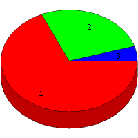

Week of 8/8/2010 to 8/14/2010: Top
3 of
3 File Types (Extensions)
Sorted by Access Count
Individual file types as determined by file extensions. All URLs that
do not contain an extension are counted as directories.

| Rank |
Type |
Accesses |
% |
Bytes |
% |
| 1 |
html
|
106 |
68.39 |
1,898,887 |
89.87 |
| 2 |
Directory (folder)
|
42 |
27.10 |
204,192 |
9.66 |
| 3 |
ico
|
7 |
4.52 |
9,842 |
0.47 |